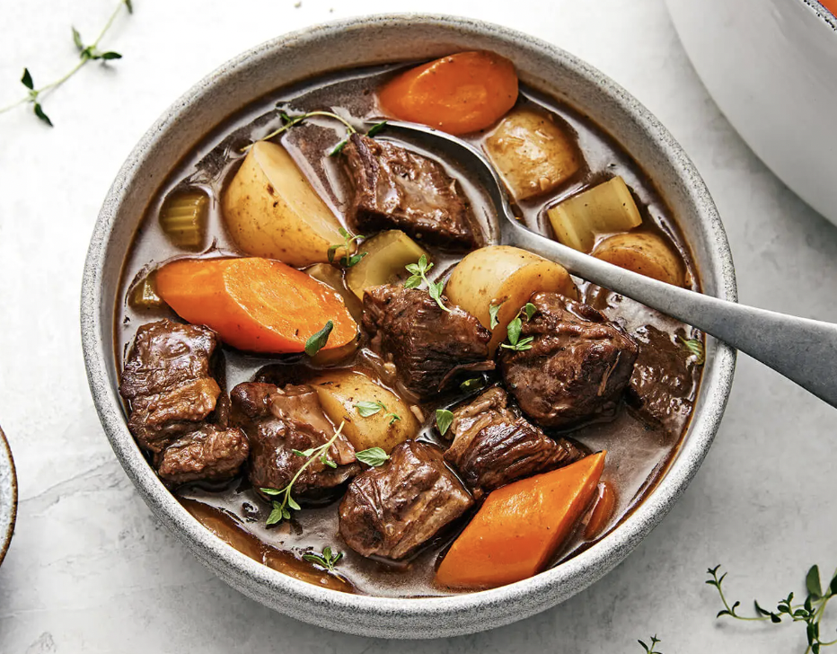

Beef Stew
Homepage

Description
Beef stew is a hearty dish suitable for lunch or dinner, slowcooked to mouth-watering perfection. In this recipe, we will be creating a big pot worth 4 servings that can be enjoyed by friends and family together.
Ingredients
- 400g Chuck Roast Beef
- 2 Russet Potatoes
- 1 Carrot
- 1 Yellow Onion
- 3 Garlic Cloves
- 1 Tbsp Tomato Paste
- 3 Cups Beed Stock
- 100ml Heavy Cream
- 1 Tbsp Corn Starch
- 1 Bay Leaf
- Salt and Pepper to season
Steps
- Cube the beef into 1-inch pieces, sear in butter until the surface is nicely browned, and set aside
- Chop up your vegetables and spread out on a baking try lined with baking paper
- Drizzle olive oil, salt and pepper and incorporate well with the vegetables
- Preheat oven to 200 degrees celcius, and cook vegetables for 25min, flipping them halfway
- Combine beef, vegetables, herbs and spices into a slow cooker, as well as the tomato paste and beef stock
- Set the slow cooker to slow stew
- After cooking, add the corn starch slurry and cream into the stew to thicken
- Serve warm and enjoy!